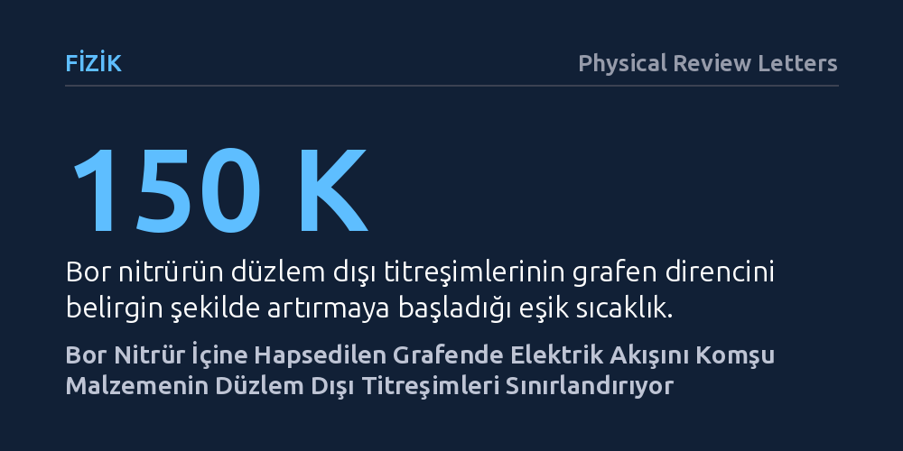

FIZIK · Physical Review Letters · 2026-10-26
Araştırmacılar, bor nitrür katmanları arasına yerleştirilen grafende elektrik direncinin yüksek sıcaklıklarda neden arttığını inceledi. Deneyler ve hesaplamalar, 150 Kelvin üzerindeki sıcaklıklarda elektron akışını grafenin kendisinin değil, çevreleyen bor nitrürün düzlem dışı atomik titreşimlerinin kısıtladığını gösterdi.
Grafeni korumak için kullanılan yalıtkan kılıfın, belirli sıcaklıklarda bizzat kendisinin iletkenliği yavaşlatan temel engele dönüştüğünü gösteriyor.

Grafen, tek atom kalınlığında karbon tabakasından oluşan ve elektriği olağanüstü hızda iletme potansiyeline sahip bir malzemedir. Ancak bu yüksek iletkenliği pratik elektronik devrelerde kullanabilmek için grafenin dış ortamdaki pürüz ve kirliliklerden korunması gerekir. Fizikçiler uzun süredir grafeni benzer bir atomik yapıya sahip olan altıgen bor nitrür (hBN) kristallerinin arasına sandviç gibi yerleştirerek korur; bu yöntem oda sıcaklığına kadar yüksek elektron hareketliliği sağlar.
Ne var ki sıcaklık arttıkça bu korunaklı yapıda bile elektrik direncinin yükseldiği gözlemleniyordu. Bilim insanları yıllardır bu direnç artışının grafenin kendi atomlarının salınımından mı yoksa dışarıdaki bor nitrürün elektriksel etkilerinden mi kaynaklandığını tartışıyordu. Bu sorunun cevabı, iki boyutlu malzemelerle çalışan nanoelektronik aygıtların temel hız sınırını belirlemek açısından kritik önem taşıyordu.
Araştırma ekibi bu soruyu aydınlatmak için deneysel taşıma ölçümleri ile kuramsal kuantum modellemelerini bir araya getirdi. İlk olarak, yabancı maddelerden arındırılmış yüksek kaliteli bor nitrür kaplı grafen aygıtları hazırlandı. Bu aygıtlarda 150 Kelvin (yaklaşık -123 °C) ile oda sıcaklığı arasında değişen sıcaklıklarda elektrik direnci hassas biçimde ölçüldü.
Elde edilen verileri anlamlandırmak için 'ilk ilkelerden' (ab initio) hesaplama yöntemleri kullanıldı. Bu simülasyonlarda elektronların, çevreleyen bor nitrür atomlarının titreşimleriyle (fononlarla) uzaktan nasıl etkileşime girdiği modellendi. Özellikle grafen içindeki elektronların bu etkileşimi perdeleme yeteneği dinamik olarak hesaba katılarak önceki çalışmalardaki teorik boşluklar giderildi.
Elde edilen sonuçlar uzun süredir devam eden bilimsel tartışmaya net bir yanıt verdi. Ölçülen direnç artışını, grafenin kendi iç atomik titreşimleri veya yüksek enerjili boyuna optik modlar tek başına açıklayamıyordu. Direncin asıl kaynağının, bor nitrür kristalinin düzlem dışına doğru yaptığı atomik titreşimler olduğu kanıtlandı.
Araştırmacılar ayrıca elektron yoğunluğu düştüğünde bu yavaşlatıcı etkinin daha belirgin hale geldiğini saptadı. Elektron sayısı azaldığında elektron bulutunun sağladığı perdeleme zayıflamakta, komşu bor nitrürün kutupsal titreşimleri grafen içindeki elektronları çok daha güçlü bir şekilde saçarak akışı frenlemektedir.
Bu bulgu, iki boyutlu malzemeleri yalıtkanlarla sararak sürtünmesiz bir elektron otoyolu oluşturma hedefinin doğal sınırlarını ortaya koyuyor. Bor nitrür, grafeni dış kirleticilerden korusa da kendi atomik yapısının getirdiği uzaktan saçılma etkisiyle oda sıcaklığındaki iletkenliğe kaçınılmaz bir tavan koymaktadır.
Gelecekte daha hızlı nanoaygıtlar ve transistörler geliştirmek isteyen araştırmacıların, yalnızca iletken kanal malzemesine değil, onu çevreleyen yalıtkanın titreşim özelliklerine de odaklanması gerekecektir. Düzlem dışı titreşimleri daha zayıf olan alternatif yalıtkan katmanların tasarlanması bu fiziksel engeli aşmanın yolu olabilir.